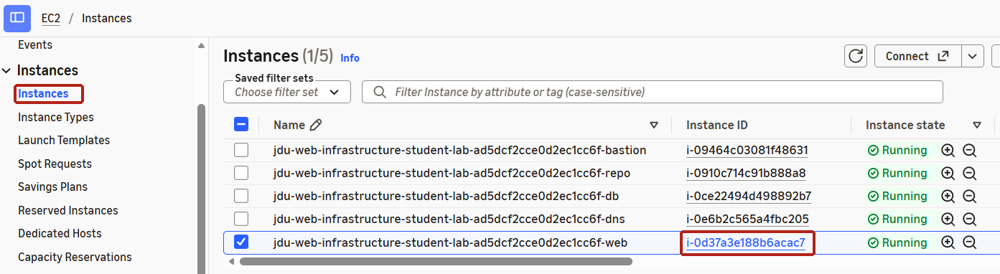
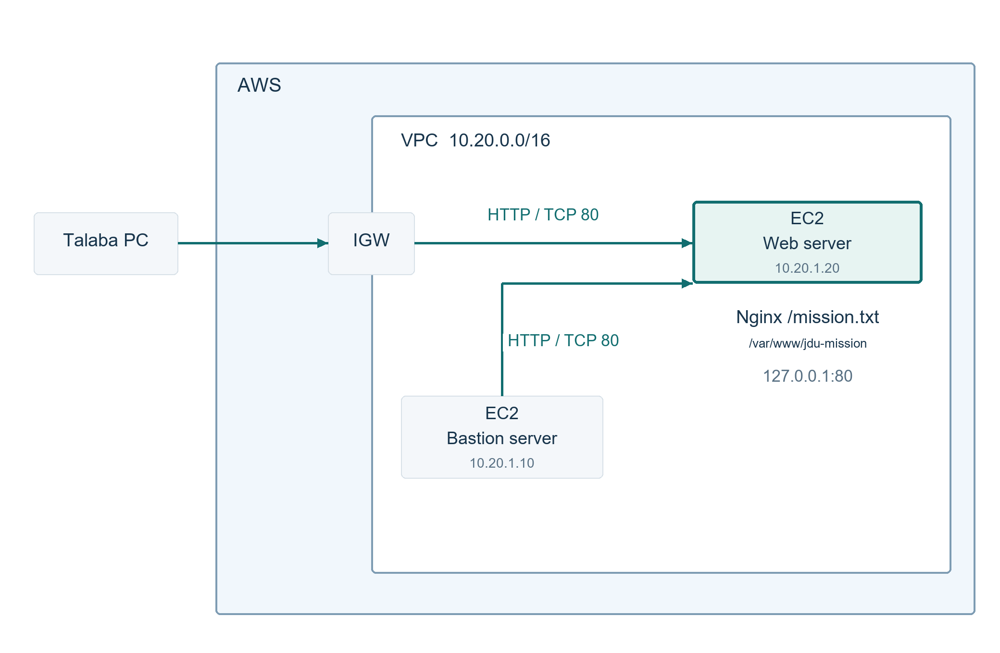

Web Infrastructure: M0-M5 mustaqil topshiriqlar
O‘qituvchi tekshiruvi uchun birinchi nashr. Talabaning qo‘llanma bo‘yicha boshidan oxirigacha o‘tishi hali tekshirilmagan.
Ruscha va o‘zbekcha matn yaponcha asl nusxa bilan bir xil qadam va shartlarga ega. Ona tili mutaxassisi tahriri hali bajarilmagan.
Mashqlar P0–P5 · Topshiriqlar M0–M5
Qo‘llanmadan foydalanish
P da mashq qilingan usul bilan shu muhitga topshiriq fayllari va sozlamalarini qo‘shing. Har bir M dagi qiymatlar va mos P qadamlariga qarang.
P0 → M0 → P1 → M1 → P2 → M2 → P3 → M3 → P4 → P5 → M4 → M5
P5 da mashq sozlamalarini yakunlang. Keyin M4 da ayni ilovani topshiriq bazasiga ulang.
M0 Shaxsiy muhit va buyruqlarni bajarish joyi (4)
Tayyor holat talablari
P0 dagi ulanish tartibini qo‘llab, to‘rtta server uchun Session Manager’ni oching. EC2 ro‘yxatida kerakli serverning Instance ID sini, so‘ng Connect yonidagi strelkani va Connect with SSM Session Manager bandini bosing. Har bir serverga ssm-user sifatida ulanib, uy katalogingizda m0-connection.txt faylini yarating va jadvaldagi qiymatni bitta qatorga yozing.
| Server | EC2 dagi nomining oxiri | Fayl mazmuni |
|---|---|---|
| DB server | -db |
db |
| DNS server | -dns |
dns |
| Repo server | -repo |
repo |
| Bastion server | -bastion |
bastion |
Topshiriqlar sahifasida M0 ni tanlang. Har bir to‘g‘ri fayl uchun 1 ball beriladi. Jami 4 ball.
Ulaniladigan serverlar

Yashil strelkalar M0 da ulaniladigan to‘rtta serverga olib boradi.

EC2 dagi Instances ro‘yxati. P0 uchun nomi -web, M0 uchun -db, -dns, -repo va -bastion bilan tugaydigan qatorlarni navbat bilan tanlang.

EC2 tafsilot oynasi. Connect yonidagi o‘ng strelkadan Connect with SSM Session Manager ni tanlang. Rasmda Web server ko‘rsatilgan.
Tekshirish va yuborish
- P0 da ishlatgan topshiriqlar sahifasiga ta’lim muassasasining Google hisobi bilan kiring va o‘z Lab muhitingiz hamda M0 ni tanlang.
- Tanlangan topshiriq tekshiruvini boshlang.
- Ishlov davom etsa natijani yangilab kuting. Nechta band bajarilganini ko‘ring. Tuzatish kerak bo‘lgan bandlarni tuzatib, yana tekshiring. Natija avtomatik saqlanadi.
M1 HTTP orqali statik faylni qaytarish (8)
Tayyor holat talablari
P1 dagi Web serverda /var/www/jdu-mission/mission.txt ni TCP 80 orqali /mission.txt sifatida tarqating. P1 fayli va sozlamasini saqlang: /practice.txt ham ochilsin.
- Fayl (P1.2).
/var/www/jdu-missionkatalogini yarating va quyidagi matnlimission.txtni joylang. Egasiroot, guruhiwww-data, ruxsati0640bo‘lsin. - Nginx sozlamasi (P1.3).
/etc/nginx/sites-available/defaultichidagi 80-portni qabul qiladigan mavjudserverga/mission.txtbilan aniq mos keladiganlocationqo‘shing. Uning root qiymati/var/www/jdu-missionbo‘lsin. P1 blokini saqlang, sintaksisni tekshiring va sozlamani qayta yuklang. - HTTP va log (P1.4-P1.6). Web va Bastiondan
/mission.txtni oching: HTTP 200 va quyidagi matn qaytsin./practice.txtham ochilishini va so‘rovlar access log ga yozilishini tekshiring.
Topshiriq diagrammasi

- Tarqatiladigan fayl
/var/www/jdu-mission/mission.txt - URL yo‘li
/mission.txt
JDU WEB-02 mission: independent HTTP delivery.
Baholash mezonlari
Har bir mezon 1 ball.
| № | Shart |
|---|---|
| 1 | Nginx ishlaydi (active). |
| 2 | nginx -t muvaffaqiyatli; /mission.txt location ichida root /var/www/jdu-mission. M1 da P1 sozlamasi ham saqlangan. |
| 3 | 80 port private IP/barcha interface da tinglaydi, faqat loopback emas. |
| 4 | /var/www/jdu-mission/mission.txt: oddiy fayl, belgilangan matn, egasi root, guruhi www-data, ruxsati 0640. |
| 5 | Web serverning o‘zi HTTP 200 va belgilangan matnni oladi; M1 da /practice.txt ham ochiladi. |
| 6 | Bastion private IP orqali HTTP 200 va aniq matn oladi. |
| 7 | CloudShell public IP orqali HTTP 200 va aniq matn oladi. |
| 8 | Access log aynan shu tekshiruv nonce li so‘rovni saqlaydi. |
Tekshirish va yuborish
- Baholash sahifasini oching va M1 ni tanlang.
- Tanlangan topshiriq tekshiruvini boshlang.
- Tekshiruv tugagach, bajarilgan mezonlar soni va har bir natija chiqadi. «Tuzating» deb belgilangan sozlamani to‘g‘rilab, yana tekshiring. «Tekshirilmagan» band natijasi aniqlanmagan. Ballarni topshiriqlar ro‘yxatidan ko‘ring.
M2 Ichki DNS va odatiy nom yechimi (13)
Tayyor holat talablari
Boshlashdan oldin baholash sahifasida M1 uchun to‘liq ball olinganini tekshiring.
P2 da sozlangan ichki DNS ga jadvaldagi oltita nomni qo‘shing. Bastion serveridan http://web.lab.test/mission.txt ochilsin.
- DNS server (P2.2-P2.4). Mavjud
lab.testzonasiga A yozuvlarini qo‘shing. Zona seriya raqamini oshiring, sintaksisni tekshiring va sozlamani qayta yuklang. P2 nomlarini saqlash mumkin. - Bastion va Web serverlari (P2.5-P2.8). Ichki DNS ga to‘g‘ridan to‘g‘ri so‘rovni va OS ning odatiy nom yechimini tekshiring. Bastionda
web.lab.testorqali M1 matnini oching. Web serverdadb.lab.testmanzili10.20.2.20bo‘lishini tekshiring.
Topshiriq diagrammasi

| DNS name | A / IPv4 |
|---|---|
| admin.lab.test | 10.20.1.20 |
| bastion.lab.test | 10.20.1.10 |
| db.lab.test | 10.20.2.20 |
| dns.lab.test | 10.20.2.10 |
| repo.lab.test | 10.20.2.30 |
| web.lab.test | 10.20.1.20 |
Baholash mezonlari
Har bir mezon 1 ball.
| № | Shart |
|---|---|
| 1 | BIND/named ishlaydi (active). |
| 2 | Named va lab.test zone tekshiruvlari muvaffaqiyatli. |
| 3 | Lab.test SOA/NS va vakolatli javob tuzilmaga mos; NS - dns.lab.test. |
| 4 | Profile dagi barcha A record kerakli private IP beradi; bu bitta band. |
| 5 | Bastion ham, Web ham UDP 53 orqali to‘g‘ri javob oladi. |
| 6 | Bastion ham, Web ham TCP 53 orqali to‘g‘ri javob oladi. |
| 7 | Bastion/Web odatiy resolver faqat BIND dan foydalanadi; hosts yoki Firefox DoH bilan almashtirilmaydi. |
| 8 | Bastiondan profile nomi va belgilangan path orqali HTTP 200 hamda to‘g‘ri matn qaytadi. |
| 9 | Web odatiy resolver profile DB nomini 10.20.2.20 ga yechadi. |
| 10 | Forward only faqat 10.20.0.2 ga yo‘naltirilgan; tashqi DNS nomi yechiladi. Tashqi HTTP shart emas. |
| 11 | Shu ishga tushirishdagi yangi mavjud bo‘lmagan nom vakolatli NXDOMAIN oladi. |
| 12 | BIND query/recursion/cache faqat localhost, bastion va Web ga ruxsat; SG ning o‘zi yetmaydi. |
| 13 | Ayni tekshiruv oddiy so‘rovlari o‘tgan holda bastion/Web AXFR aniq rad etiladi; timeout yetmaydi. |
Tekshirish va yuborish
- Baholash sahifasini oching va M2 ni tanlang.
- Tanlangan topshiriq tekshiruvini boshlang.
- Tekshiruv tugagach, bajarilgan mezonlar soni va har bir natija chiqadi. «Tuzating» deb belgilangan sozlamani to‘g‘rilab, yana tekshiring. «Tekshirilmagan» band natijasi aniqlanmagan. Ballarni topshiriqlar ro‘yxatidan ko‘ring.
M3 PostgreSQL ga autentifikatsiya bilan ulanish (9)
Tayyor holat talablari
Boshlashdan oldin baholash sahifasida M2 uchun to‘liq ball olinganini tekshiring.
P3 dagi PostgreSQL da quyida ko‘rsatilgan topshiriq ma’lumotlar bazasi va ikkita rolni yarating. Ilova jadvallari M4 da yaratiladi.
- DB server (P3.2-P3.6). Baza va rollarni yarating. Tegishli bazaga ko‘rsatilgan rollar bilan faqat Web serverdan (
10.20.1.20/32) ulanishga ruxsat bering. P3 dagidek SCRAM ishlating. - Web server (P3.7-P3.8). Oddiy ish rejimi roli bilan
db.lab.testga ulanib, SELECT bajarilishini tekshiring. Mavjud parolni P3.8 dagi usul bilanmissionprofili uchun saqlang.
Topshiriq diagrammasi

| Sozlama | Qiymat |
|---|---|
| Baza nomi | jdu_catalog |
| Sozlash roli | catalog_setup |
| Oddiy ish rejimi roli | catalog_app |
Baholash mezonlari
Har bir mezon 1 ball.
| № | Shart |
|---|---|
| 1 | PostgreSQL 16/main ishlaydi (active). |
| 2 | 16/main sozlamasi, standart data directory va OS postgres socket/peer to‘g‘ri. |
| 3 | PostgreSQL 10.20.2.20:5432 da tinglaydi. |
| 4 | DB va public schema egasi tegishli setup role. |
| 5 | Runtime LOGIN; superuser/CREATEDB/CREATEROLE/REPLICATION/BYPASSRLS va huquq oshiruvchi membership yo‘q. Setup qurishda LOGIN yoki tugagach NOLOGIN. |
| 6 | HBA faqat ko‘rsatilgan DB/role va Web /32 uchun SCRAM ga ruxsat beradi; keng ruxsat yo‘q. |
| 7 | Web dan yangi autentifikatsiyali SELECT kerakli DB/user/qiymatni qaytaradi; P IP bilan, M odatiy DNS orqali. |
| 8 | To‘g‘ri parol ishlagan ayni tekshiruvda bitta noto‘g‘ri parol aniq rad etiladi. |
| 9 | Web dan postgres role, begona DB va boshqa profile taqiqlangan; hali yaratilmagan practice DB majburiy emas. |
Tekshirish va yuborish
- Baholash sahifasini oching va M3 ni tanlang.
- Tanlangan topshiriq tekshiruvini boshlang.
- Tekshiruv tugagach, bajarilgan mezonlar soni va har bir natija chiqadi. «Tuzating» deb belgilangan sozlamani to‘g‘rilab, yana tekshiring. «Tekshirilmagan» band natijasi aniqlanmagan. Ballarni topshiriqlar ro‘yxatidan ko‘ring.
M4 Berilgan app ni Web va DB bilan bog‘lash (13)
Tayyor holat talablari
Boshlashdan oldin baholash sahifasida M2, M3 uchun to‘liq ball olinganini tekshiring.
P4 dagi jihozlar ilovasini M3 da tayyorlangan topshiriq bazasiga ulang. Profilni almashtirishdan oldin P5 da mashq sozlamasini yakunlang.
- Web server (P5.3, P4.4-P4.5). Ilovani to‘xtating va
missionprofilini tanlang. Mavjud ilovadan foydalanib, topshiriq bazasida jadvallar, boshlang‘ich ma’lumotlar va administratorni yarating. - DB va Web serverlari (P4.6-P4.8). Oddiy ish rejimi roliga huquqlarni bering va ilovani ishga tushiring. Ochiq sahifa hamda boshqaruv sahifasini oching.
/practice.txtva/mission.txtham ochilishini tekshiring. - Bastion serveri (P4.9).
http://admin.lab.test:8080/admin/manziligalab_adminbilan kiring va jadvaldagi ikki yozuvni kiriting. Ochiq sahifada e’lon qilingan yozuvni tekshiring.
Topshiriq diagrammasi

| Kod | Nomi | Soni | Saqlash joyi | Ochiq |
|---|---|---|---|---|
M5-PUBLIC-001 |
Mission monitor | 6 | Lab cabinet C | Ha |
M5-PRIVATE-001 |
Mission router | 1 | Lab cabinet D | Yo‘q |
Baholash mezonlari
Har bir mezon 1 ball.
| № | Shart |
|---|---|
| 1 | Kod va bog‘liqliklar berilgan aniq versiyaga mos. |
| 2 | jdu-catalog active va enabled, catalog nomidan ishlaydi. |
| 3 | Gunicorn faqat 127.0.0.1:8000 da tinglaydi. |
| 4 | Faol process kerakli profile DB va runtime role dan foydalanadi. |
| 5 | Belgilangan migrations, 11 jadval va zarur sequence tanlangan DB da mavjud. |
| 6 | Ikkala majburiy yozuv profile qiymatlariga mos; boshqa to‘g‘ri yozuvlar mumkin. |
| 7 | Odatiy ochiq URL ishlayotgan DB dan to‘g‘ri yozuvlarni oladi. |
| 8 | Bastiondan odatiy DNS orqali admin.lab.test:8080/admin/ haqiqiy login shakli ochiladi. |
| 9 | Static resurslar belgilangan yo‘l orqali ochiladi. |
| 10 | Funksional rejim haqiqiy password/CSRF/cookie login dan o‘tadi, autentifikatsiya chetlab o‘tilmaydi. |
| 11 | Shu tekshiruvda admin HTTP orqali bitta CK yozuv yaratilib, DB va ochiq sahifa qiymatlari mos keladi. |
| 12 | Aynan shu CK yozuv miqdori o‘zgartiriladi; DB va ochiq sahifa o‘zgarishni tasdiqlaydi. |
| 13 | POST logout session ni tugatadi: eski cookie bilan yana login talab etiladi. |
Tekshirish va yuborish
- Baholash sahifasini oching va M4 ni tanlang.
- Funksiya/huquq tekshiruvini tanlang, lab_admin mavjud parolini app administratorining yashirin maydoniga kiritib, shu parol bilan tekshiring. Bu RDP paroli emas. Faqat sozlama tekshiruvi funksiyalarni tasdiqlamaydi.
- Tekshiruv tugagach, bajarilgan mezonlar soni va har bir natija chiqadi. «Tuzating» deb belgilangan sozlamani to‘g‘rilab, yana tekshiring. «Tekshirilmagan» band natijasi aniqlanmagan. Ballarni topshiriqlar ro‘yxatidan ko‘ring.
M5 Eng kam huquq va ochiq kirish chegarasi (16)
Tayyor holat talablari
Boshlashdan oldin baholash sahifasida M4 uchun to‘liq ball olinganini tekshiring.
M4 ilovasini P5 dagi usul bilan oddiy ish rejimiga o‘tkazing. Faqat sozlashda kerak bo‘lgan kirishni yoping, ilova va administrator uchun zarur huquqlarni qoldiring.
- DB server (P5.1-P5.2).
catalog_apphuquqlarini tekshiring. Sozlash rolicatalog_setupuchun kirishni yoping, parolini olib tashlang va qolgan ulanishlarini yakunlang. - Web server (P5.3-P5.4). Vaqtinchalik sozlamalarni (
/etc/jdu-catalog/setup.envva/etc/jdu-catalog/profiles/mission.setup.env) olib tashlang va ilovani oddiy ish uchunmissionprofili bilan ishga tushiring. Xizmat foydalanuvchisi kodni o‘zgartira olmasin. Maxfiy sozlamalarroot:rootga tegishli bo‘lsin va0600ruxsatiga ega bo‘lsin. - Ochiq va boshqaruv sahifalari (P5.4-P5.5). 80-portda M4 dagi faqat ochiq yozuv ko‘rinsin. Bastion orqali 8080-portdagi boshqaruv sahifasini oching.
lab_adminjihozlarni ko‘rishi, qo‘shishi va o‘zgartirishi mumkinligini tekshiring.
Topshiriq diagrammasi

Baholash mezonlari
Har bir mezon 1 ball.
| № | Shart |
|---|---|
| 1 | Ochiq 80 soxta Host/header bilan ham admin ni ochmaydi; private yo‘l esa ishlaydi. |
| 2 | Maxfiy fayllar oddiy root:root 0600, link va qiymat ochilishi yo‘q. |
| 3 | Login/sudo siz catalog kod, venv va ularning boshqaruv kataloglarini o‘zgartira olmaydi. |
| 4 | Tekshiriladigan env/maxfiy path lar HTTP yoki static orqali ochilmaydi. |
| 5 | Setup role NOLOGIN/password NULL, session lari yopilgan, vaqtinchalik setup.env lar o‘chirilgan. |
| 6 | catalog_item: faqat SELECT/INSERT/UPDATE; DELETE, TRUNCATE va huquq uzatish yo‘q. |
| 7 | auth_user: SELECT va faqat last_login/password UPDATE; user yaratish/o‘chirish yo‘q. |
| 8 | Guruh, permission, bog‘lanish va content type jadvallari faqat SELECT uchun. |
| 9 | django_session: faqat kerakli SELECT/INSERT/UPDATE/DELETE; ortiqcha huquq yo‘q. |
| 10 | django_admin_log: faqat SELECT/INSERT. |
| 11 | Runtime da django_migrations huquqi, schema CREATE, obyekt egaligi va belgilanmagan qo‘shimcha huquq yo‘q. |
| 12 | USAGE faqat jihoz va admin-log sequence lariga; ortiqcha SELECT/UPDATE/GRANT yo‘q. |
| 13 | Faol staff, superuser emas: faqat jihoz view/add/change; delete/user management yo‘q. |
| 14 | Nazorat login o‘tgan holda anonim add/change DB ni o‘zgartirmay rad etiladi; faqat CSRF-403 yetmaydi. |
| 15 | Bitta noto‘g‘ri app paroli rad etiladi, ayni paytda to‘g‘ri login ishlaydi. |
| 16 | DB ishlagan holda topilgan barcha yopiq kodlar ochiq sahifada ko‘rinmaydi. |
Tekshirish va yuborish
- Baholash sahifasini oching va M5 ni tanlang.
- Funksiya/huquq tekshiruvini tanlang, lab_admin mavjud parolini app administratorining yashirin maydoniga kiritib, shu parol bilan tekshiring. Bu RDP paroli emas. Faqat sozlama tekshiruvi funksiyalarni tasdiqlamaydi.
- Tekshiruv tugagach, bajarilgan mezonlar soni va har bir natija chiqadi. «Tuzating» deb belgilangan sozlamani to‘g‘rilab, yana tekshiring. «Tekshirilmagan» band natijasi aniqlanmagan. Ballarni topshiriqlar ro‘yxatidan ko‘ring.